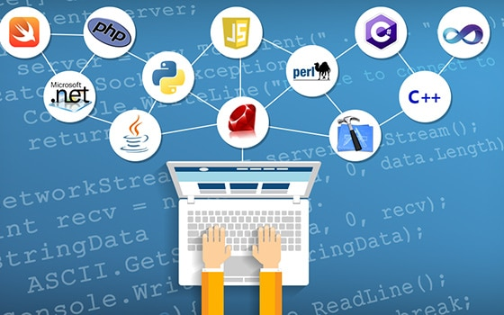

Los lenguajes de programación son herramientas que permiten a los desarrolladores crear programas, aplicaciones, páginas web y sistemas informáticos.
Entre los lenguajes más utilizados se encuentran
Java
Python,
JavaScript, C++ y C#.
Python se utiliza principalmente para crear páginas web.
Actualmente, Python destaca por su uso en
inteligencia artificial, ciencia de datos, automatización y
aprendizaje automático.
JavaScript solo se utiliza para crear páginas web interactivas.
Actualmente también se utiliza para desarrollar aplicaciones de
servidor mediante tecnologías como Node.js.
Esta información ha sido actualizada el 06/10/2026.
